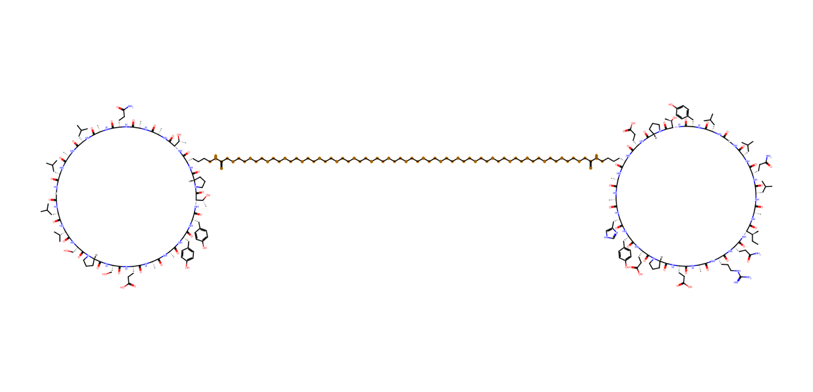

Route A / IL-23R: scaffold modification and reassessment
A reference-led route starting from icotrokinra and extending two selected candidates at six positions.
- 01
Reference & candidate generation
Start from the reference scaffold and retain the original generation and selection records. Historical tools, weights and cutoffs still require verification.
- 02
Sequence-risk mapping
Use PeptideCutter on natural-residue proxy sequences to identify protease-recognition hotspots. Proxy counts are not actual cleavage predictions for modified cyclic peptides.
- 03
Complete chemical definition
Use pyPept and RDKit to encode modified residues, stereochemistry, N-methylation and head-to-tail closure. Validate valence and connectivity.
- 04
Complex prediction
Use Boltz-2 with three samples per molecule in the reported reassessment. Apply geometry checks before selecting representative models.
- 05
Interface assessment
Compare ipTM, target-epitope coverage, contact precision and buried SASA against the reference using the same calculation settings.
- 06
Property assessment
Calculate MW, heavy atoms and TPSA with RDKit. Assess predicted serum stability and Caco-2 permeability using the stated PeptiVerse endpoints.
- 07
Joint candidate review
Review 2D chemistry and 3D poses together. Balance binding-site recognition, polarity and stability without inventing universal hard cutoffs.
- 08
Next validation
Prioritize revisions and experimental follow-up. The supplied comparison does not establish an overall improvement over icotrokinra.
Route B / IL-17: de novo design and three-form review
An eight-stage route covering monocyclic candidates and a PEG-linked two-ring design.
- 01
Target & epitope definition
Use PDB 9SGH, 8RUU and 5N92 to define the design region and shared epitope. Retain the mapped residue set as the contact reference.
- 02
Backbone generation
Generate head-to-tail cyclic peptide backbones with RFdiffusion and RFpeptides, recording the intended ring length.
- 03
Geometry filtering
Apply project-specific checks for ring closure, backbone geometry and receptor-surface compatibility before sequence design.
- 04
Sequence design
Use ProteinMPNN with cyclic positional encoding. Record residue identity and any proposed noncanonical modifications.
- 05
Complex prediction
Predict peptide–target complexes with Boltz-2 and aggregate ipTM over the defined samples or clusters.
- 06
Interface review
Analyze epitope contacts and per-side buried SASA. Reject or repair geometrically problematic poses before interpreting their interfaces.
- 07
Patent review
Search sequences and claims as a supporting review step. Keep structure and source records; a database search does not establish freedom to operate.
- 08
AA / AF / FF transfer
Transfer and predict candidates for IL-17AA, IL-17AF and IL-17FF separately. Report form-specific confidence and interface measures.
Two-ring chemistry requires a complete linker definition
The BC-7-PEG20 scheme joins two head-to-tail cyclized 22-residue peptide arms using PEG20 diacid. Its ends form amide bonds with the side-chain ε-amines at P-Lys2 and Q-Lys9. Full-molecule descriptors must include that linker.
The supplied complex predictions contain the receptor and two peptide chains without explicit PEG atoms. Their geometry cannot demonstrate preservation of the pose after full-linker modeling or establish bivalent affinity.
